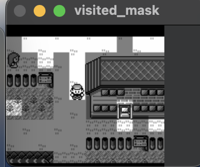

Observations #
As mentioned previously, observations are a representation of the state of the environment. In the Tic-Tac-Toe example, the observation was a 3x3 grid. For Minecraft, it could be a screen image and the agent’s current inventory. Pokémon contains tons of visible and invisible pieces of information.
It is possible to give the agent the entirety of in-game RAM and let the agent solve the game. I desired to make the agent play the game as a new player would. When in doubt, I tried to stick to one rule when designing my observations:
The observation can not contain any in-game knowledge a human player would not have access to.
What does this mean in practice? No knowledge of a Pokémon’s hidden stats. No knowledge of a Pokémon’s future moves. No knowledge of an enemy’s moveset. No knowledge of the whole game map until a new area was visited. etc.
My First Observations #
The current game screen downsampled by 2 (72x80 pixels) in grayscale. #
- Pokémon Red was released as a grayscale game. The color information does not provide any extra information until later generations.
- Downsampling the screen still provided enough information to determine where the character is.
- The screen gives the agent the most direct knowledge of what it is doing.
- An alternative would be to collect all entity information for the current screen from RAM. However, I felt that the game screen provided the best parallel to how a human interacts with a Gameboy
- Another alternative would be to provide the sprites as an observation. Again, I like how using pixels mimics how a human would play Pokémon Red.
The “Visited Mask” #

- The Visited Mask is a view of the current game screen displaying where the player has not visited in its mini-episode.
- The visited mask provides a way of giving the agent its exploration history to the policy. Without the visited mask, the agent was more likely to revisit the same areas repeatedly and never progress
A binary vector of all events the agent has or has not completed. #
- Events are in-game objectives that have been accomplished. In the GameBoy’s WRAM, the events array tells the game what to enable/disable when the agent enters a new map.
- I tried as hard as possible to remove this. I want to eventually as believe the events observation leaks information.
- I had to create four events not automatically included in the events array:
- Rival 3 defeated.
- Lapras acquired.
- Drink given to Saffron guard.
- Celadon Game Corner Rocket defeated.
Handling New Challenges #
Along the way, I added more observations to handle specific in-game complexity.
The direction the agent is facing #
- This provided an extra hint to teach the agent about what player sprite maps to what orientation.
The map ID an agent will return to if they lose a battle (Blackout Map ID) #
- This is not necessary, but was a way to help the agent understand to use Pokémon Centers, a form of checkpointing.
The items in the agent’s inventory along with quantities #
- If the agent ever learned about what items it could use, this is how.
- Some items are required. This observation helps the agent know when it obtained a required, non-event item
The agent’s party including any information available in a party member’s stats page, e.g. health left #
- This observation may not have been necessary, I placed these observations in-case I ever wanted to write battle AI.
The number of steps left in the safari zone minigame #
- Although I have not explained the Safari Zone in-depth, I wanted to prevent the agent from running in circles in the Safari Zone.
Whether or not the agent has received the gift lapras. #
- Although redundant given the party observation, Lapras is extremely important for game progression per “The Route.”